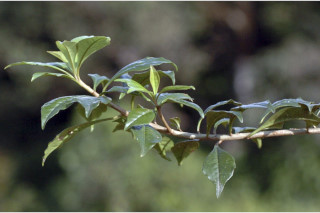
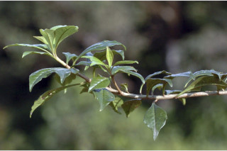
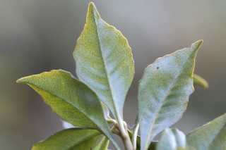
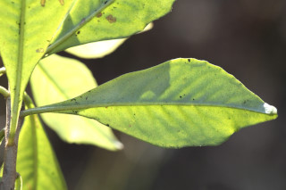
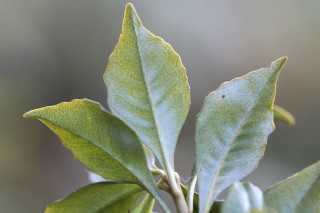
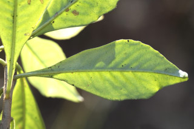

Small trees up to 5 m tall.
5 ಮೀ. ಎತ್ತರದವರೆಗಿನ ಸಣ್ಣ ಮರಗಳು.
Small trees up to 5 m tall.
சிறியமரங்கள் 5 மீ. உயரம் வரை வளரக்கூடியது.
Branches horizontal; young branchlets terete, densely scaly.
ಕವಲುಗಳು ಮುಖ್ಯ ಕಾಂಡದ ಕೋನಕ್ಕೆ ಸಮಕೋನದಲ್ಲಿರುತ್ತವೆ;ಎಳೆಯ ಕಿರುಕೊಂಬೆಗಳು ಉಪ-ದುಂಡಾಗಿದ್ದು ದಟ್ಟವಾಗಿ ಶಲ್ಕೆಗಳಿಂದ ಆವರಿಸಿಕೊಂಡಿರುತ್ತವೆ.
Branches horizontal; young branchlets terete, densely scaly.
கிளைகள் நிலத்திற்கு கிடைமட்டமானது; சிறியநுனிக்கிளைகள் குறுக்குவெட்டுத் தோற்றத்தில் வளையமானது, அடர்த்தியாக செதில்களுடையது.
Leaves simple, alternate, spiral; petiole 0.4-0.8 cm long, slender, glabrous when mature; lamina 2.3-6 x 1.3-2.8 cm, rhomboid or elliptic-oblanceolate, apex acute to acuminate with blunt tip, base attenuate or cuneate, margin entire or obscurely crenulate, recurved, glabrous, chartaceous; midrib slightly canaliculate above; secondary_nerves and tertiary_nerves obscure.
ಎಲೆಗಳು ಸರಳವಾಗಿದ್ದು ಪರ್ಯಾಯ ಮತ್ತು ಸುತ್ತು ಜೋಡನಾ ವ್ಯವಸ್ಥೆಯಲ್ಲಿರುತ್ತವೆ; ತೊಟ್ಟುಗಳು ಅಂದಾಜು 0.4 -0.8ಸೆಂ.ಮೀ. ಉದ್ದವಿದ್ದುತೆಳುವಾಗಿರುತ್ತವೆ ಮತ್ತುಬಲಿತಾಗ ರೋಮರಹಿತವಾಗಿರುತ್ತವೆ;ಪತ್ರಗಳು 2.3 - 6 X 1.3 – 2.8 ಸೆಂ.ಮೀ.ವರೆಗಿನ ಗಾತ್ರವಿದ್ದು ವಜ್ರಾಕೃತಿ ಅಥವಾ ಅಂಡವೃತ್ತದ-ಬುಗುರಿ-ಭರ್ಜಿ ಆಕಾರ ಹೊಂದಿದ್ದು, ಚೂಪಾದುದರಿಂದ ಮೊಂಡಾಗ್ರವುಳ್ಳ ಕ್ರಮೇಣವಾಗಿ ಚೂಪಾಗುವ ತುದಿ, ಒಳಬಾಗಿದ ಅಥವಾ ಬೆಣೆಯಾಕಾರದ ಬುಡ,ಅಂಚು ನಯವಾಗಿ ಅಥವಾ ಅಸ್ಪಷ್ಟವಾದ ಸೂಕ್ಷ್ಮ ದುಂಡೇಣುಗಳನ್ನು ಹೊಂದಿದ್ದು ಸುರುಳಿಗೊಂಡಿರುತ್ತದೆ,ಪತ್ರಗಳು ರೋಮರಹಿತವಾಗಿದ್ದು ಎರಡೂ ಬದಿಯಲ್ಲಿ ಚದುರಿದ ಕಂದು ಬಣ್ಣದ ರಸಗ್ರಂಥಿಗಳ ಸಮೇತವಿರುತ್ತವೆ ಮತ್ತು ಕಾಗದವನ್ನೋಲುವ ಮೇಲ್ಮೈ ಹೊಂದಿರುತ್ತವೆ; ಮಧ್ಯ ನಾಳ ಮೇಲ್ಭಾಗದಲ್ಲಿ ಸ್ವಲ್ಪ ಮಟ್ಟಿಗೆ ಕಾಲುವೆ ಗೆರೆ ಸಮೇತವಾಗಿರುತ್ತವೆ; ಎರಡನೇ ದರ್ಜೆಯ ಮತ್ತು ಮೂರನೇ ದರ್ಜೆಯ ನಾಳಗಳು ಅಸ್ಪಷ್ಟ.
Leaves simple, alternate, spiral; petiole 0.4-0.8 cm long, slender, glabrous when mature; lamina 2.3-6 x 1.3-2.8 cm, rhomboid or elliptic-oblanceolate, apex acute to acuminate with blunt tip, base attenuate or cuneate, margin entire or obscurely crenulate, recurved, glabrous, chartaceous; midrib slightly canaliculate above; secondary_nerves and tertiary_nerves obscure.
இலைகள் தனித்தவை, மாற்றுஅடுக்கமானவை, சுழல் போன்று அமைந்தவை; இலைக்காம்பு 0.4-0.8 செ.மீ. நீளமானது, மெல்லியது, உரோமங்களற்றது; இலை அலகு 2.3-6 x 1.3-2.8 செ.மீ., சாய்சதுர வடிவானது (ராம்பாய்டு) அல்லது நீள்வட்ட-தலைகீழ் ஈட்டி வடிவானது, அலகின் நுனி கூரியது முதல் அதிக்கூரியதுடன் அதன் முனை மழுங்கியது, அலகின் தளம் அட்டனுவேட் அல்லது ஆப்பு வடிவானது, அலகின் விளிம்பு முழுமையானது அல்லது தெளிவற்ற பிறை போன்ற பற்களுடையது மற்றும் பின்புறம் வளைந்து காணப்படும், உரோமங்களற்றது, அலகின் மேற்பரப்பு மற்றும் கீழ்பரப்பில் ப்ரவுன் நிறமான சுரப்பிகளுடையது, சார்ட்டேசியஸ்; மையநரம்பு மேற்புறத்தில் அலகின் பரப்பைவிட சிறிது பள்ளமானது; இரண்டாம் நிலை நரம்புகள் மற்றும் மூன்றாம் நிலை நரம்புகள் கண்களுக்கு புலப்படாது.
Inflorescence axillary umbellate cymes; flowers pinkish-white; peduncle 1-1.5 cm long; pedicel 0.6-0.8 cm long, slender.
ಪುಷ್ಪ ಮಂಜರಿಗಳು ಅಕ್ಷಾಕಂಕುಳಿನಲ್ಲಿರುವ ಪೀಠಛತ್ರ ಮಧ್ಯಾರಂಭಿ ಮಾದರಿಯಲ್ಲಿರುತ್ತವೆ; ಹೂಗಳು ನಸುಗೆಂಪು - ಬಿಳಿ ಬಣ್ಣದವು;ವೃಂತ 1 – 1.5 ಸೆಂ.ಮೀ. ಉದ್ದವಿರುತ್ತದೆ;ತೊಟ್ಟುಗಳು 0.6 – 0.8 ಸೆಂ.ಮೀ. ಉದ್ದವಿದ್ದು ತೆಳುವಾಗಿರುತ್ತವೆ.
Inflorescence axillary umbellate cymes; flowers pinkish-white; peduncle 1-1.5 cm long; pedicel 0.6-0.8 cm long, slender.
மஞ்சரி இலைக்கோணங்களில் காணப்படும் அம்பல்லேட் சைம் வகை; மலர்கள் பிங்க்-வெள்ளை நிறமானது; மஞ்சரிக்காம்பு 1-1.5 செ.மீ. நீளமானது; மலர்காம்பு 0.6-0.8 செ.மீ. நீளமானது, மெல்லியது.
Berry, ca. 0.6 cm across, with persistent stylar base.
ಬೆರ್ರಿ ಫಲಗಳು ಅಂದಾಜು 0.6 ಸೆಂ.ಮೀ. ಅಡ್ಡಗಲತೆ ಹೊಂದಿದ್ದು ಶಾಶ್ವತವಾಗಿ ಉಳಿದುಕೊಂಡ ಶಲಾಕೆಯ ಬುಡದ ಸಮೇತವಿರುತ್ತವೆ.
Berry, ca. 0.6 cm across, with persistent stylar base.
முழுச்சதைகனி (பெர்ரி), 0.6 செ.மீ. குறுக்களவுடையது, சூலகத்தண்டு நிரந்தரமானது.
 


 


